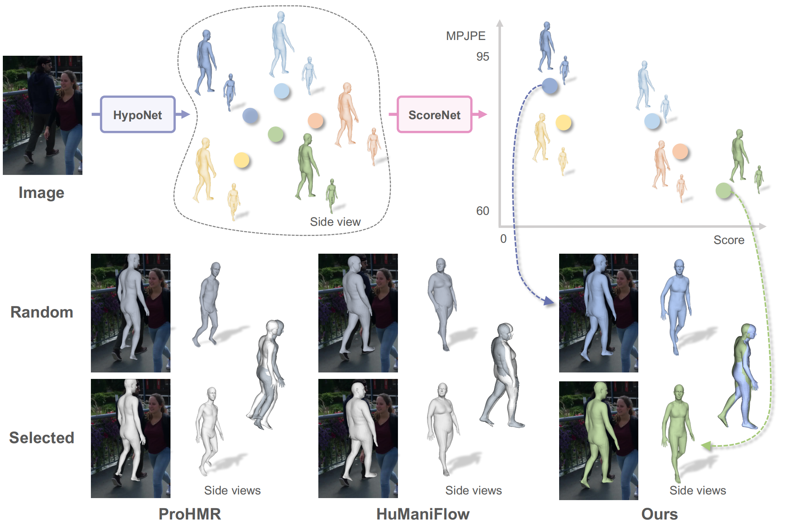

|
I'm a senior undergraduate student in Computer Science at Peking University. I'm a member of the Computer Vision and Digital Art group, advised by Prof. Yizhou Wang. Email / Google Scholar / LinkedIn / Github |
{kind=link}
ResearchI'm interested in computer vision and machine learning, especially 3D human. |
|  |
Monocular 3D human mesh estimation is an ill-posed problem, characterized by inherent ambiguity and occlusion. While recent probabilistic methods propose generating multiple solutions, little attention is paid to obtaining high-quality estimates from them. To address this limitation, we introduce a versatile framework by first leveraging our novel \textbf{HypoNet} to generate multiple hypotheses, followed by employing a meticulously designed scorer, \textbf{ScoreNet}, to evaluate and select high-quality estimates. Our framework formulates the estimation process as a reverse denoising process, where HypoNet produces a diverse set of plausible estimates that effectively align with the image cues. Subsequently, ScoreNet is employed to rigorously evaluate and rank these estimates based on their quality and finally identify superior ones. Experimental results demonstrate that HypoNet outperforms existing state-of-the-art probabilistic methods as a multi-hypothesis mesh estimator. Moreover, the estimates selected by ScoreNet significantly outperform random generation or simple averaging. Notably, the trained ScoreNet exhibits generalizability, as it can effectively score existing methods and significantly reduce their errors by more than 16mm. Code and models will be publicly released. Our framework, featuring HypoNet and ScoreNet, advances monocular 3D human mesh estimation by generating multiple hypotheses with HypoNet and selecting the most accurate estimates using ScoreNet, efficiently tackling inherent ambiguities in the task. |
{kind=link}
Education |

|
Bachelor's degree
Depart. of Artificial Intelligence, Peking University, China Sep. 2020 ~ Now |
|
Template courtesy of Jon Barron. Last update: 11/2023. |